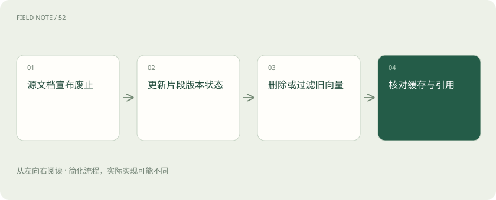
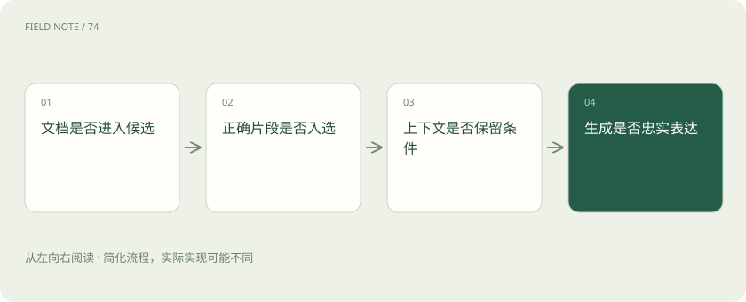

先读哪些知识
先用一个类比理解
类比只帮助建立直觉，不等同于技术的完整机制。
一图看懂
先看一个会出错的问题
员工问：“新供应商接入需要哪些安全检查？”知识库同时有两年前的流程、上个月修订版和一个未批准草稿。向量检索可能把语义最相近的旧版排在前面；即使模型忠实总结检索结果，答案仍可能过期。
因此 RAG 不是“文本转向量再聊天”这么短的一条链。它需要定义文档身份、版本、有效日期和可见范围，再决定哪些片段允许进入回答。框架可以帮助组织流程，但不能替公司决定哪份规范具有权威性。
摄取先解决文档结构
文件解析、表格提取、切分和元数据继承决定检索单元的质量。安全检查表若把“仅适用于外包服务”的标题与下面的检查项拆开，检索到检查项时就会丢失适用范围，导致模型向全部供应商套用外包要求。
可以给片段保留文档标识、章节路径、版本与来源位置，并让表格的列标题和行值保持对应。切得更小只会增加精细度，不保证语义完整；切得更大也可能把多个互相冲突的规则混进同一段。
LlamaIndex 的数据应用视角
LlamaIndex 围绕数据接入、索引、检索及基于数据的问答等能力提供组织方式，并可扩展到工作流与 Agent。它的价值在于连接资料和应用推理，而不是给向量数据库换一个名字；底层存储可以独立选择。
在本例中，可将供应商规范的片段与元数据组织为检索资源，再把查询、上下文构建和回答串起来。若引入复杂文档解析服务，应把解析能力、框架能力和可能的外部服务费用区分开，不能假定安装框架就包含一切文档理解能力。
图解：旧版规范的失效链

Haystack 的组件流水线视角
Haystack 用组件及管道等方式组织文档处理、检索、路由和生成，也支持 Agent 等应用模式。显式连接的组件便于观察某个检索器、排序器或提示构建步骤的输入输出，适合需要清楚描述数据流的系统。
例如先判断问题是否要求现行规范，再对文档状态和生效日期过滤，随后并行使用词法与向量检索并合并结果。框架能组织这些部件，但每个部件究竟查什么、怎样合并和失败时如何降级，仍需团队定义。
向量数据库负责什么
向量数据库主要保存向量及相关数据并提供相似性查询，具体产品也可能支持过滤和混合搜索。它通常不负责决定提示词、是否拒答、如何生成引用，不能从“已入库”推出“整条知识问答链已完成”。
同样，RAG 框架并不能保证底层索引更新立即可见。删除旧版规范时，需要确认源文件、片段、向量和缓存是否一致失效。如果只删除页面入口而旧片段仍能被召回，助手仍可能引用已废止规则。
检索结果要经过证据选择
现行规范问题先过滤已批准且生效的版本，再召回与安全检查相关的片段；精确术语和编号适合词法信号，表达方式多变的问题可借助向量信号。混合检索与重排可以改善候选质量，但不应越过用户权限范围。
生成阶段要要求答案中的关键要求能对应到证据位置，并核对“必须”“建议”“可以”是否保持原意。引用链接只是可追溯入口，不能因为附了链接，就认为每一句话都得到文档支持。
评价应覆盖三个层面
先看正确文档能否进入候选，再看排序后是否进入上下文，最后看回答是否准确表达条件。若正确片段根本没召回，换更强生成模型可能无济于事；若召回正确而答错，则应查上下文组织与生成约束。
准备现行版、旧版、草稿冲突和无权限四类样本，记录每次失败所在阶段。不要只统计用户是否喜欢回答语气；业务知识助手首先应避免把失效规定说得很流畅。
图解：定位回答错误

何时不用完整框架
资料很少、来源稳定且只需精确查找时，数据库查询或普通全文搜索可能更直接。已有成熟检索服务时，也可以保留它，只在外层增加证据组织与生成，无需为了使用框架重建所有索引。
自检：模型引用了旧版规范，第一步是否调大模型？应先检查文档版本治理、过滤与召回轨迹。只有定位错误发生在哪一层，才知道该修元数据、检索策略还是生成步骤，而不是盲目更换整套技术栈。
放在一起对比
| 层次 | 核心责任 | 验收问题 |
|---|---|---|
| 向量数据库 | 存储与相似性检索 | 过滤和更新是否正确 |
| LlamaIndex | 连接数据与检索问答应用 | 数据身份和查询链是否完整 |
| Haystack | 组件化处理与检索生成管道 | 各阶段输入输出能否定位 |
| 业务治理 | 权威版本与用户权限 | 答的是可见且有效的规则吗 |
放进真实场景
员工问：“新供应商接入需要哪些安全检查？”知识库同时有两年前的流程、上个月修订版和一个未批准草稿。向量检索可能把语义最相近的旧版排在前面；即使模型忠实总结检索结果，答案仍可能过期。
别踩这个误区
想一想
回答附有规范链接，能否证明答案中的所有要求都正确？
不能。还要检查链接指向的版本与生效状态，以及具体要求是否由对应片段支持，尤其要保持适用范围和强制程度。
关联阅读
资料与边界
本文为原创知识讲解。类比和图示经过简化；示例数字不代表实测或报价。整理日期：2026-11-04。文末列出对应技术的原始资料，具体功能与版本支持请以原文为准。